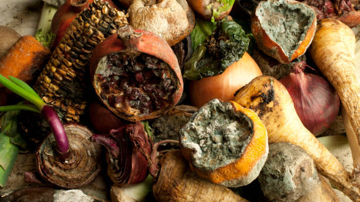
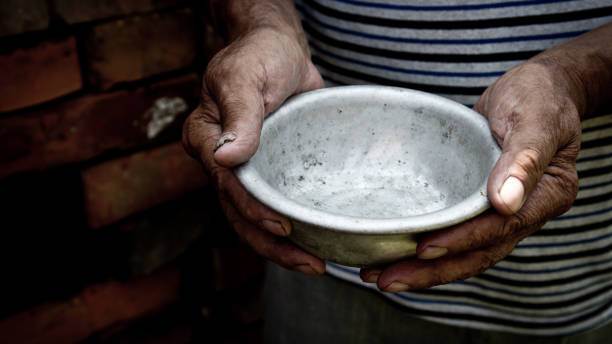
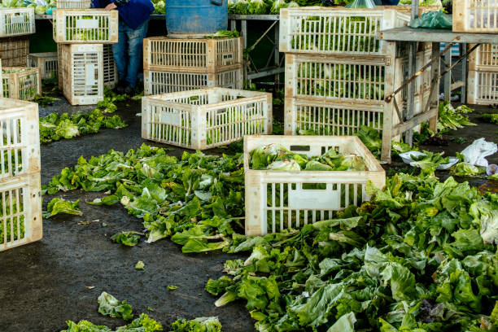
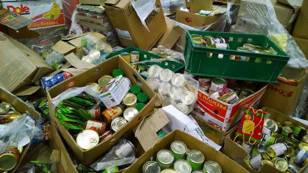
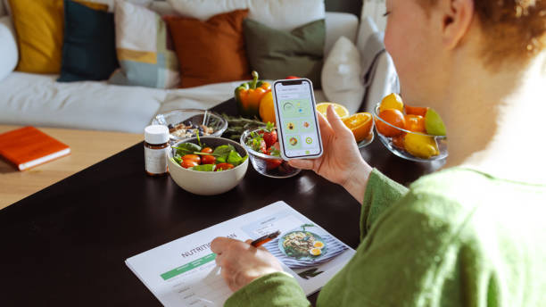

Food Waste & Loss
Every year, billions of tonnes of food never reach a plate — and the consequences stretch far beyond an uneaten meal."
What is Food Waste & Loss?
Food waste and food loss are two sides of the same damaging coin, yet they are not the same thing. Food loss refers to produce that never even reaches consumers — crops damaged during harvesting, spoiled during transport, or discarded at processing stages long before they reach a shelf. Food waste, on the other hand, happens closer to home — in supermarkets that reject imperfect vegetables, restaurants that over-prepare, and households that simply forget what is sitting in the fridge. Together, they represent one of the most significant and preventable contributors to environmental damage on the planet, and addressing them is a core part of what SDG 12 is pushing the world to achieve.
Why it matters

The scale of food waste globally is staggering, and the consequences stretch far beyond an uneaten meal. When food is wasted, everything that went into producing it — the water, the land, the energy, the labour — is wasted too.
On top of that, food rotting in landfill produces methane, a greenhouse gas significantly more potent than carbon dioxide. The economic cost is enormous, and the moral dimension is impossible to ignore when hundreds of millions of people around the world do not have enough to eat. Tackling food waste is not a niche environmental concern — it is one of the most impactful and accessible things individuals and communities can act on right now.
- Approximately 1/3 of all food produced globally is lost or wasted each year — around 1.3 billion tonnes
- Food waste is responsible for roughly 8–10% of global greenhouse gas emissions
- If food waste were a country, it would be the third largest emitter of greenhouse gases in the world
- An estimated 783 million people are affected by hunger globally
- UK households alone waste around 9.5 million tonnes of food every year
Where It Happens
Food waste does not happen in one place — it occurs at every single stage of the journey from farm to fork, and understanding where it happens is the first step to knowing where to intervene. In lower-income countries, the majority of loss happens early in the chain due to a lack of proper storage, refrigeration, and infrastructure. In wealthier nations like the UK, the problem shifts dramatically toward the consumer end — supermarkets, restaurants, and households are where the bulk of avoidable waste occurs. Every stage presents an opportunity for action, whether that is better harvesting techniques, smarter retail practices, or simply a student checking their fridge before doing a food shop.


- At the Farm: Crops rejected for being the wrong shape or size, overproduction due to uncertain demand, weather damage with no backup storage
- During Transport & Processing: Spoilage from poor refrigeration, damage in transit, strict sell-by date policies cutting product life short
- In Supermarkets & Retail: Buy-one-get-one offers encouraging over-purchasing, unsold stock discarded at end of day, cosmetic standards rejecting edible food
- In the Home: Forgetting what is already in the fridge, cooking too much, misunderstanding date labels, poor meal planning

What Students Can Do
It is easy to feel like food waste is a systemic problem too big for any one person to affect — but students are actually in a uniquely powerful position. Living independently, often for the first time, means making real decisions about food every day. Those decisions, repeated across thousands of students on a single campus, carry genuine weight. The actions below are not about perfection or sacrifice — they are practical, low-effort habits that save money as much as they help the planet. Adopting even two or three of them consistently makes a measurable difference.
- Plan your meals for the week before you go shopping — buy only what you will actually use
- Do a fridge check before every food shop to avoid buying duplicates
- Learn the difference between "use by" and "best before" — best before is about quality, not safety
- Store food correctly — many items last far longer when stored properly
- Cook in batches and freeze portions rather than letting leftovers go to waste
- Compost food scraps if your accommodation allows it
- Join or start a campus food sharing scheme — many universities have free food fridges
The Bigger Picture
Reducing food waste is not just about individual guilt or personal responsibility — it is about what becomes possible when enough people and institutions commit to change at the same time. Countries that have invested seriously in food waste reduction have seen measurable drops in emissions, significant economic savings, and improved food security for vulnerable communities.
Technology is also playing a growing role, from apps that connect restaurants with surplus food to smart packaging that extends shelf life. As a student today, you are part of a generation that will shape the policies, businesses, and social norms of the next few decades. Choosing to act on food waste now — however small the action — is a vote for the kind of world you want to help build.
- Global greenhouse gas emissions could fall significantly, contributing directly to climate targets
- Billions of pounds saved across households, businesses, and public services
- More food available to redirect toward communities and countries experiencing food insecurity